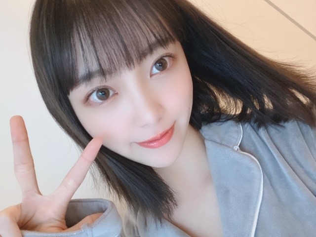

2020/0404Satばっさり
Mステでサプライズお披露目しましたが、
髪切りました
ずっと伸ばしててやっとロングになったのですが
思い切って久しぶりに短く☺︎
ロング派の人、すみません
ちょくちょくInstagramとかブログにロング写真も
載せますね
今回は
切りっぱなしボブ でちょっと重めな感じです!

サプライズ成功かな？
サプライズ成功かな？
Mステで初お披露目にしてびっくりさせたくて...
どうですか...？
見つけてもらえたかなぁ
どうですか...？
見つけてもらえたかなぁ
仕事場に行ったらみんな気づいてくれて
ひなちまがかわいいって言いにきてくれて
いくちゃんもまいちゅんもれんかも
好きって言ってくれて
切り立ての毛先を白石さんといくちゃんと
切り立ての毛先を白石さんといくちゃんと
松村さんと高山さんに囲まれてふさふさ触られて
日奈子にもボブを持ち上げられて
毛先が喜んでました。笑
すぐに気づいて褒めてくれるメンバーが
日奈子にもボブを持ち上げられて
毛先が喜んでました。笑
すぐに気づいて褒めてくれるメンバーが
大好きだなぁと改めて☺︎
切りすぎたかなぁと思ってたからよかった。


そういえば乃木坂に入って
初めて髪をショートにした時も3月末とかだったなぁ
懐かしい
髪っていろんなものが詰まってるので
今は心も頭もさっぱりしてます
春ですね、
あ〜
5月27日にはよならんかな〜
写真集いい感じに仕上がってます!
早く見てほしいですᕦ(ò_óˇ)ᕤ✨
ちなみに表紙が決まりまして
通常版1種、限定盤3種の計4種類です!
まだお見せできないのですが
動画で私が説明してますので、是非。
さまざまな特典も先着であります!
御予約はこちらから☺︎
ふふふ

いま、ゴルゴンゾーラを聴いているのですが
ゴルゴンゾーラのレコーディングの時、
実は風邪をひいていて声がハスキーになっていまして
"変わりものばかりいつも惹かれてしまうのはなぜだろう"
"もっとアクが強い人と喧嘩をしながら"
改めて聞いてたら全然声違うやん！
ってなりました笑
話急に逸れたけど
よかったら注目してみて聞いてください✰
絢音がいつもゴルゴンゾーラを褒めてくれるの笑
かわいい歌だねって
私が特に好きな歌詞は
"趣味が悪かろうがなにを言われようが自分が良けりゃいいでしょ？"
"だれからも好かれてちゃ独り占めできない"
かなぁ
みなさんのゴルゴンゾーラ での
好きな歌詞はありますか？
変わり者が変わり者を好きになった感じが
かわいくて好きな世界観だし
普通じゃ物足りないじゃん!っていう邪道もいいし
チーズ好きだし
モッツァレラよりゴルゴンゾーラだし
好きが詰まった曲ですね
映画でいう、"アメリ"とか"勝手にふるえてろ"みたいな世界観です
また好きな歌の好きな歌詞紹介します!
好きな歌を好きな映画に例えるのもわかる人にはわかりそうでいいかも！
これ楽しい☺︎！
普段歌詞見ながら音楽聞く派なので
話したくて仕方ないんです。笑

ちなみに
最近観て面白かった映画は
ハッピーデスデイ
最低で最高のサリー
です☺︎
この2つの映画は全然違うジャンルだけど
これをみて感じたことは、
考えてから言葉を発さないといけないってことと
毎日を一生懸命に生きるって大事だなということ
取り消せないものの1つに"言葉"があるなぁと思っていて
何気ない一言で相手を傷つけてたりするし
自分の正直に何でも言う部分は大事にしたいけど
言葉を言う前に考える瞬間も本当に大切だなって。
だってその一言でいろんなことが変わってしまうんだから。ハッピーデスデイを見て痛感しました
無意識に人を傷つけることほど
怖いものはないですもんね...
人生やり直せたらって思っても
やり直しはもちろんきかないし
だからこそ自分に相手に、正直になって
毎日を生きるって大切だなぁと。
不器用だったら変に器用ぶらないで、
不器用らしくぶつかっていこ〜
ワハハ
急募
口内炎が治る方法
ではは
2020/04/04 12:36


コメント(649)
Mステ見たよ。髪短くなっててびっくり。ボブもすごく似合ってて可愛い！未央奈はロングも似合うけどボブも似合うしどんな未央奈も好き。
メンバーがすぐに気づいて褒めてくれるの嬉しいね。
5月27日楽しみだなあ。写真集早く見たいよ。限定版も全部揃えなくては。
ゴルゴンゾーラいいよね。ハスキーな声でも未央奈の声好き。アナスターシャの出だしも、未央奈の声良いなあって思いながら聴いてる。
僕はゴルゴンゾーラの「変わり者ばかり いつも惹かれてしまうのはなぜだろう?」が好きかな。
未央奈の好きな歌詞の話好きかも。映画で例えるのはよくわかんないけど未央奈らしくて楽しい。
未央奈が映画の話するとすごく気になって見たくなるよ。ハッピーデスデイ見たい。
口内炎にはうがい薬で口を濯ぐのがいいよ。あとビタミン。お大事にね。
では！
ｍステ未央奈ちゃんのこと探しててめっちゃびっくりした！
でも、ショートも可愛いからまっいっか
写真集楽しみです。
お久しぶりにコメントしました！
昨日のMステで髪切ったのすぐ気づいたよ〜♡
めちゃめちゃ似合ってて
私的には女の子はボブ
好きなので可愛すぎました！！
口内炎治す方法はね〜私も良くなるけど
ビタミン取ることと睡眠とることと
バルトレックスってゆうお薬飲むとすぐ治るよ！
ロングも好きだけどショートはもっと好き！
口内炎は歯医者に行って薬貰って塗ればすぐ治ります！
髪すごくかわいい～！
Mステ見た時びっくりしました笑
短い方が似合ってます！
次のブログも楽しみにしてます！！
ボブ未央奈めっちゃ可愛いです
凄く似合っています！
口内炎は薬を塗るのが1番だと思います、詳しくは分かりませんが…
ゴルゴンゾーラ私も好きです！
コロナ流行ってるので体調に気をつけて頑張ってください！
口内炎を治す方法噛んで潰す。笑笑
口内炎の部分に貼るやつ(丸いシールみたいな)
があって、使いやすくて治りやすいので
とても良いよー！！！
切り過ぎなんてないです、初期みたいにもっと短くてもぐらい
くしゃっとなった未央奈ちゃんの笑顔がほんとに好きです。
体調に気をつけて過ごしてね！
ボブになっててビックリしたよ〜！モバメの時点でファンは騒いでいたけど、本当にボブにしていたとは！
Mステ、ガールズルールの時のカメラアピールがすごく可愛かった！♡
ロングも大好きだけどボブも大好きだし、今私もボブだから嬉しい！髪色も近いからアレンジとか参考にしたいな︎☺︎
ゴルゴンゾーラ本当に好き！それぞれのソロも一緒に歌ってるパートも声が可愛いし、歌詞も可愛いし、よく聴いてる♪
私は未央奈ちゃんと同じ「誰からも好かれてちゃ独り占めできない〜」の歌詞が好きで、後は「いい人ってことはどうだっていい人だ」の歌詞が初めて聴いた時すごく印象深かった！
不器用すぎる自分が嫌であの時をやり直したいなって思うことがあるんだけど、未央奈ちゃんの755やブログの言葉に元気づけられました。ありがとう。
私は考えすぎちゃって何も言えないってことがよくあるんだけど、だからこそ沢山言葉を発信してくれる未央奈ちゃんに憧れます。
不器用なのを嘆くことなく、不器用なりにがむしゃらに生きていきたいな。
私は口内炎が軽い時はハチミツを付けたり、ひどい時は塗り薬を塗ってる！早く治りますように。
ビタミンをとるとか、薬を塗るとか…ですかね！
口内炎は、再発するのが辛いですよね〜(；；)
乃木坂が安心出来る場所になって、よかったですね
Mステ観ました
ショートヘアもいいね
口内炎はビタミンB6が含まれている玄米、さつまいもがオススメです
ずっと応援してます！
本当にビックリ。
絶対に切らないと思ってたけど
僕の悲願だったので嬉しいの一言です。
周りの反応を見る限りでは僕と同じ人が
多いみたいだよ。
外ハネさせてる分、以前より
大人の雰囲気だけどよきよきです。
"ボブ未央奈はじめました" は
最高です。（笑）
ゴルゴンゾーラを改めて聴いて
今コメントしてるけど…⁇
僕には分からん。
ただ、ラジオでレコーディングの度に
風邪をひいてたというエピソードを
言ってた覚えはあるよ。
歌ってる側で思い入れのある歌詞とか
言ってくれるのは嬉しいな。
またよろしくお願いしますという感じ。
僕は泣きまくりなんで絞れません。
映画の感想もありがとう。
そういう見方になるんだね。
ちょっとは興味があるけど…ね
もうひとつ決めてがあったら観るかも。
口内炎についてはごめんなさい。
子供の頃にしかなった事がなくて
特に対策とか分からないな。
その代わりといってはなんだけど
僕が食べてあげることは出来るよ。（笑）
でははのは。
Mステ見たよ！
「え、未央奈ちゃん髪の毛切った。めちゃ可愛い。」
って思いました。
めちゃ似合ってます！
写真集も楽しみ！
(^^)／~~~
Ｍステ３時間スペシャル見たよ
ちゃんと未央奈見つけたしめっちゃ髪型カワイイよ
今日も未央奈大好き
僕も短い方が好きです！
口内炎は頑張るしかないです!笑笑
またね
個人的にすごく似合ってるな〜って思います♡︎
自分がそのくらいのボブにしたら不器用だから上手くセットできなそうだけど不器用らしくぶつかった結果のボサボサなら良いのか笑笑、なんて思ったり。
いつもお疲れ！元気もらってます！！
切りっぱなしボブ最高すぎてもう最高です！笑
握手会で早く会いたいです！！
ブログありがとう♪
髪型良いよん☆
まぁ、ロングも良きなんだけど、
春が来た〜！！って感じで
とっても良き☆
みんな重たい気分になりがちだから
明るいニュース？をありがとう♪
今日は、料理とハガキ職人してる♪
夜はバッジ職人になる予定〜笑笑
ではは
わたる⊿
アメリ大好きです。一番好きなのは、ヒッチコックの裏窓です。
口内炎と言えば、直ぐにチョコラＢＢを思い出します。以下引用です。ではは。
口内炎ができやすいのは、忙しいスケジュールやストレスを感じている時、またダイエット中なのでは？
細菌や傷などが引き金になってできる口内炎ですが大きな原因として、栄養バランスの乱れが考えられます。特に、粘膜の健康に関わるビタミンB2やビタミンB6が 大事です。 栄養不足のままでは治ってもまたすぐにできるという繰り返し。口内炎をしっかり改善するには活性型ビタミンB2配合のチョコラBBプラスを！
口内炎には｢トラフル｣っていう口内炎に直接貼る薬がオススメです！
今の髪型めっちゃ好き！
あと口内炎を治すには口内環境を清潔に保つのが一番！
僕もよくできるから困ってるんだ〜
ビタミンをよく摂取すると出来にくくなるよ！
ちょっとは役に立てたかな？
体調管理もしっかりとね！
私、歯科医療従事者です！
いつも応援しよるよー‼︎
ボブにしてくれてありがとう！！！ボブがいい！って言っててほんとになったからめちゃ嬉しい！！Mステでしっかりと観ましたよ！ボブにあっててまじ可愛い
これからも頑張ってね！！
ショートヘア良きです。偏見なんですけど、
かわいいorキレイな人ってショートとロングが
両方似合うと思うんです。北川景子さんは代表格だと思います。
もちろんショートが究極に似合う人がいれば
ロングが似合う人はいますけど。
ゴルゴンゾーラ、イイですよね❗️僕は、ゴルゴンゾーラは
「罰ゲームみたいで絶対食べたくない」んですけど、
ゴルゴンゾーラみたいな人は好きです❗️
良いクセがあって魅力を持つ人(未央奈)にハマってしまいます。
言葉を考え過ぎて文が長ったらしくなってしまいました。
飾らずに生きていきます❗️不器用のままに❗️
Mステサプライズでした❗️
次のブログと写真集楽しみです❗️
まいやんMステラストによりまいやんを多めに拝見していたため、一瞬ボブみおなに気がつかなかったのですが、2回目に映ったときにボブみおなに気がついて小さめに叫びました笑笑圧倒的ボブ派です！なんならハルジオンらへんの菱形っぽい髪型が好みです！！！乃木でボブ似合うのななみんかみおなくらいだと思っていて羨ましいのでこれからもボブでいてほしいなぁと個人的には思ってます、！しかも黒髪？！最高です！黒髪似合う人は黒髪が1番可愛いという個人的意見があるので黒髪ボブみおなはやっぱり最強だなーと思いました！あまり上手に伝えられませんが、みおなの黒髪は個性だなーとまで思ってます！
応援しています！
いや、見事にサプライズやられましたw
どちらかというとロング派だったからちょっと動揺したけど、、めっちゃ似合ってて可愛いやん！ってなったから結果切りっぱなしボブ未央奈も好きです。おーけー解決w
メンバー仲さすが！いくちゃん2回出てきたっ。よっぽど髪型気に入ったんだねw
そういうメンバーとのエピソードを知れるとファン側も嬉しいよ！
きっと髪切ったの知った他のメンバーも良いと思ってるだろうね！
バッサリしてスッキリして、春ですね。
写真集近づいてきてるね！こんな時に楽しみが5月にあるのは良いことだー☆
特にお気に入りのカットとかあったらこれから発信していってほしいです(゜ー゜)(。_。)
ゴルゴンゾーラにハチミツのピザが好きです！！w
あ、ゴルゴンゾーラの歌詞の方は「いい人は、どうだっていい人だ」って意外とグサッとささるとこじゃない？
もし相手にそう思われちゃってるっての知ったらショック大きいかなー(^^;
乃木坂46の曲を中心に好きな歌詞紹介だったら、ブログ見てコメントしてるひとならほぼ100%分かるかだろう良いかもねw
もちろん、他のアーティストさんでも！
言葉には、力が宿るっていうからね。
その一言で相手に良い気持ちにも、嫌な気持ちにしてしまうから難しいよね。
多分、一生付き合ってく悩みというか課題というか。
でも、考えすぎても良くないと思うし。未央奈の言うとおり昔に戻ってやり直せるわけではないから正直に生きてくのもすごい大事だと思う！
「AH 素直に生きたいだけなのに複雑な時代だな。」だね
浮世CROSSINGより。
口内炎は嫌だね～。
ビタミン特にB2とB6！あとは基本の栄養しっかりとって良く寝ること！
口内炎の薬もいろいろあるね。塗り薬に飲み薬など。
以上！( ・∇・)
ブログ更新ありがとー。さぁちゃんこと掛橋ちゃんも未央奈ブログ多く更新してくれるから嬉しいって！会いたいって！好きだって！(ちょっと盛りました。)
でわ、わ。
ショートかわいい
口内炎を治すにはビタミンをとるといいと思います
初コメです
私も愛用してるので。
結構すぐ治ります。美味しいし。
是非!!
どんな髪型でも可愛いね
ゴルゴンゾーラは趣味が悪かろうがなにを言われようが自分が良けりゃいいでしょって歌詞がいいですね。恋愛を他の人に指図されたくないからかなw
映画ですが、町田くんの世界という映画を借りてきて観ました！とても純粋だとこんな世界観なのかなーと思うのと同時に自分は荒んでるなと思ってしまった…ちょっとショックw
是非観てみて！
口内炎はね、栄養をバランス良く摂って充分な睡眠をとってストレスを溜めないことが大事！難しいけどね。
ではは
Mステおつかれさま〜
髪切ったの気づきましたっ！嬉しいです、、
ゴルゴンゾーラは全体を通して好きです！
写真集も楽しみにしてます
口内炎は市販の薬を塗るのが1番だと思います。
気をつけてね、、
Mステ観ました
ショートヘアもいいね
口内炎はビタミンB6が含まれている玄米、さつまいもがオススメです
コメントする